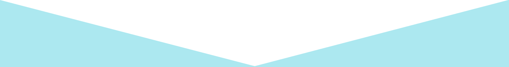
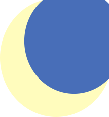

r
e
m
elaxing
xotic
attresses
ao infinito e arem
Quem somos
Colchão, travesseiro e tudo que há de confortável
A Relaxing Exotic Mattresses é a empresa brasileira que conquistou o mundo pela sua grande
diversidade de produtos que fazem até os seus sonhos terem sonhos. Com a tecnologia mais avançada
e os materiais veganos menos prejudiciais ao seu bem estar do mercado, nós sempre vamos além
do infinito para trazer conforto a todas as pessoas que precisam de descanso sem o inconveniente
de pesadelos.
Como agradecimento por deixar nossos colchões lhe abraçarem durante toda a noite, você também
pode aliviar o estresse com a reconfortante função de massagem que vem em cada um deles.
"Dormir com os produtos REM é como passar a noite em uma nuvem: tranquilo, relaxante e exótico",
afirma Baykurinha Remebora, uma de nossas clientes.
Venha arem conosco.
Durma REM, sonhe bem
Nossa história
Em 2003:
Fundação da empresa e abertura da primeira fábrica
Em 2011:
Expansão para outros países, com abertura de filiais em toda a América do Sul
Em 2018:
Início das ações sociais com apoio nacional e internacional
Em 2022:
Reconhecimento pela OMS e pela ONU como auxiliar vital para bem estar e saúde da população global
Portfólio
Projetos
- Trabalho em parceria com o hospital Laureano, localizado em João Pessoa (PB) que estava passando por situações precárias e como parte de nossas ações filantrópicas, doamos colchões para o mesmo.
- Colaboração com a cantora Ariana Grande que adquiriu um de nossos colchões e sedeu o lucro de sua música "R.E.M" para que ele fosse doado para pessoas necessitadas.
- Projeto de colaboração com o estado da Bahia e rede de supermercados Carrefour, no qual, fizemos doações de alimentos e colchões para as pessoas que foram afetadas pelas enchentes ocorridas no último ano.
Curiosidades
- A empresa tem esse nome porque REM, do inglês, é como a ciência chama o estado em que estamos sonhando.
- A empresa optou por ter colchões como produto porque acredita que dormir é a oitava maravilha do mundo e muito importante para saúde.
- O índice de demissões no Brasil cresceu em mais de 30% após o início das vendas dos colchões REM. Isso aconteceu porque os funcionários estavam ocupados dormindo e perderam o início dos expedientes.
- O destaque do Google é, também, graças ao fato de que a área de descanso para os funcionários da sede contém colchões REM.
- A rainha da Inglaterra, Elizabeth, é adepta dos nossos colchões, por isso seu reinado vem durando por tantos anos.
- O bordão usado pelo personagem Buzz Lightyear no filme "Toy Story" é uma paródia do nome da nossa empresa, pois fizemos uma parceria com a Disney. Por isso, se a pessoa que estiver assistindo reparar bem, na cama do personagem Andy, tem o nome REM.